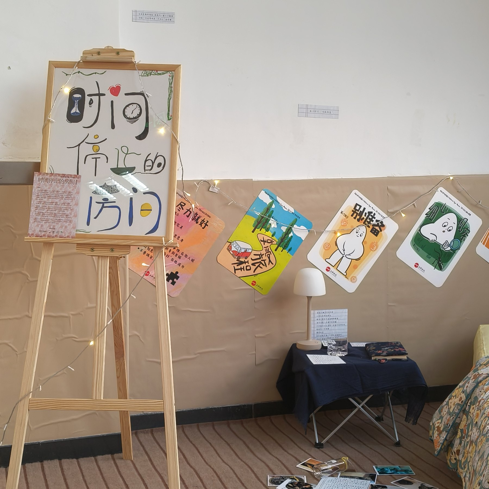
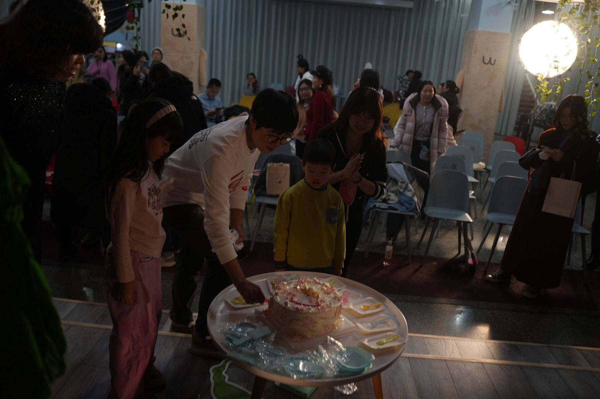
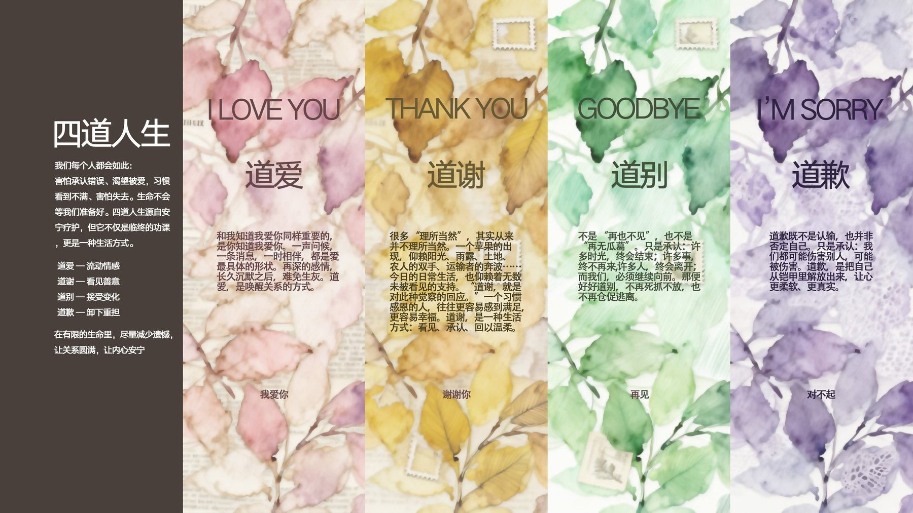
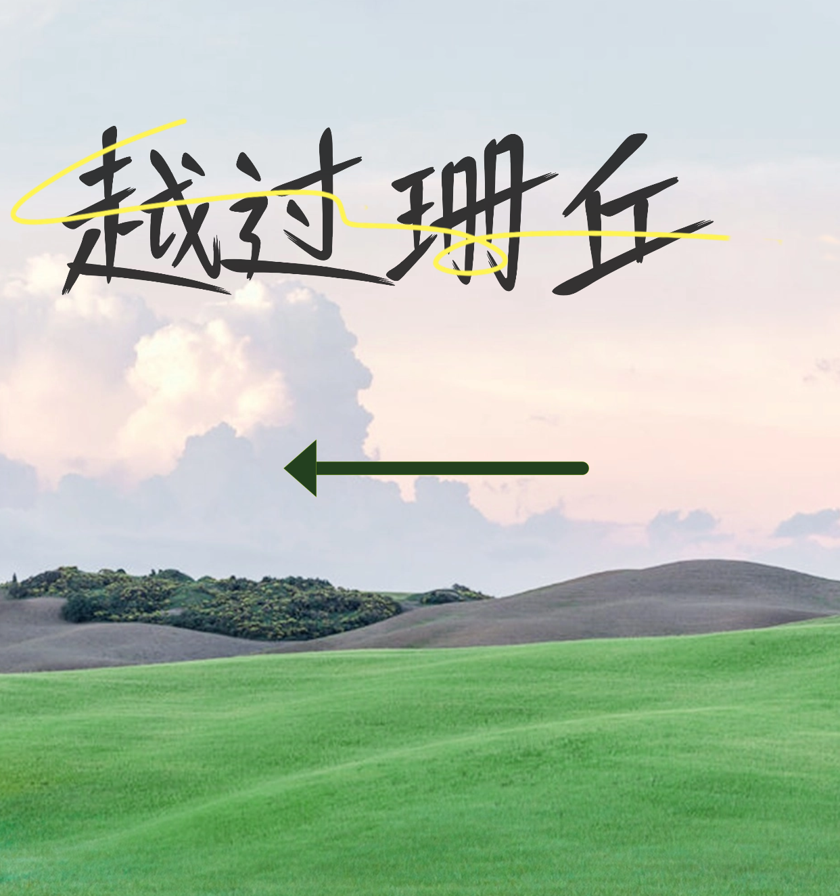

内容策划
能把抽象主题拆成观众可理解、可参与的章节和路径。
PROJECT 03 / CONTENT IN SPACE
这组项目来自我对“内容如何被真实看见”的兴趣。文字和图像可以停留在屏幕里，也可以被做成空间、动线、物料和现场体验。这里记录的是我如何把一个议题拆成观众能够进入、停留和参与的过程。
查看生命展详情 → 查看越过珊丘详情 →CASE A
生命展围绕生命教育、心理关怀和公共表达展开，将抽象议题转化为空间动线、展板、物料和现场互动。项目参与人数 200+，获得师生与家长积极反馈。

CASE B

《越过珊丘》结合戏剧、心理疗愈、互动体验和公共表达，关注观众如何在现场进入一个议题。项目曾被腾讯纪录片团队录制，作为《人生不过几顿饭》节目内容的一部分。
FIELD METHOD
能把抽象主题拆成观众可理解、可参与的章节和路径。
关注内容被看到之后，用户如何停留、行动和反馈。
能把文字、视觉、空间和活动流程组合成完整体验。
EVIDENCE TODO

待补充：生命展观众参与图。

待补充：《越过珊丘》活动流程图。
SUMMARY
这两个项目让我把内容从文字和屏幕带到真实空间里：观众怎样走动、停留、阅读、参与，都会影响内容最终被理解的方式。
本网站由我独立策划、整理和完成。过程中使用 ChatGPT、Codex 等模型辅助结构梳理、文字修改和代码实现；内容判断、材料取舍和最终表达由我负责。